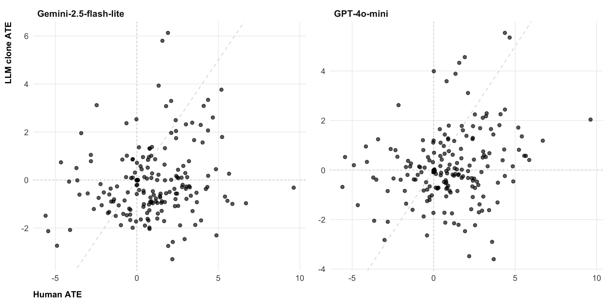
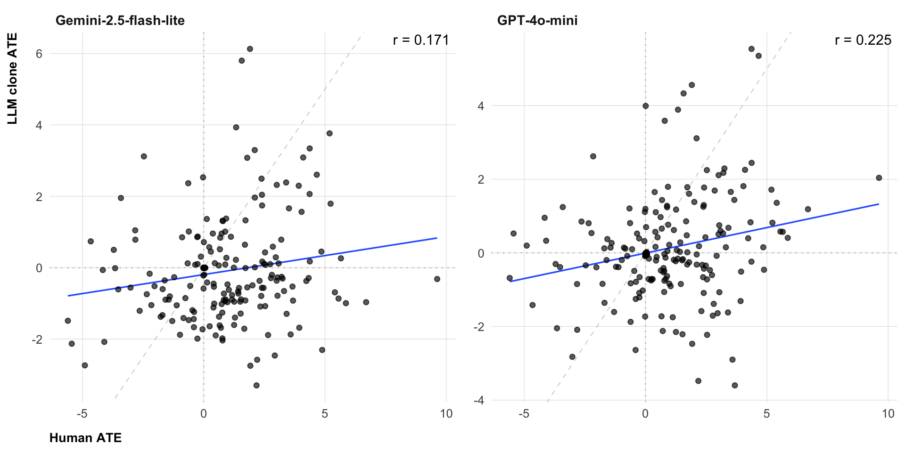
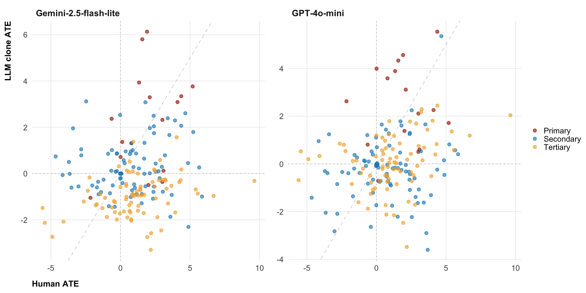
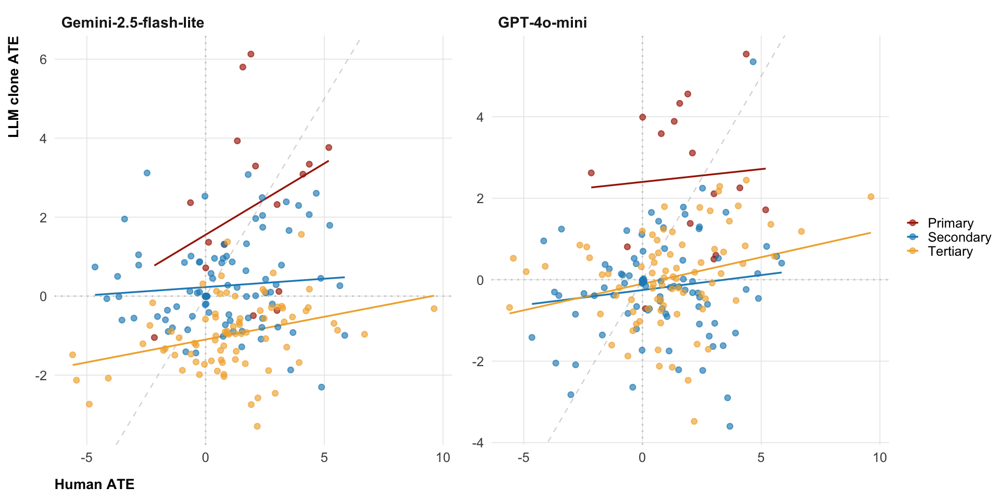
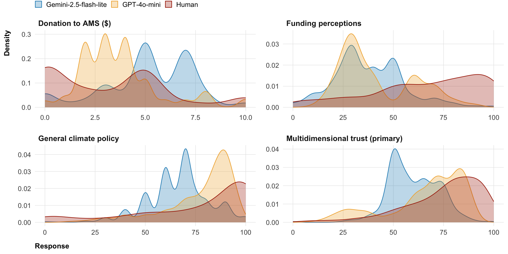

| Outcome |
Human 1 vs. Gemini
|
Human 1 vs. GPT-4o-mini
|
||||||||||
|---|---|---|---|---|---|---|---|---|---|---|---|---|
| Spearman ρ | Pearson r | RMSE | Dir. (%) | Infer. (%) | TOST (%) | Spearman ρ | Pearson r | RMSE | Dir. (%) | Infer. (%) | TOST (%) | |
| All outcomes | ||||||||||||
| All outcomes | 0.147 | 0.171 | — | 50.0 | 80.2 | 0.0 | 0.214 | 0.225 | — | 51.6 | 91.7 | 0.0 |
| Primary | ||||||||||||
| Multidimensional trust (primary) | 0.265 | 0.327 | 2.338 | 81.2 | 50.0 | 0.0 | −0.038 | 0.070 | 2.525 | 81.2 | 37.5 | 0.0 |
| Secondary | ||||||||||||
| Distrust | 0.029 | −0.119 | 2.980 | 50.0 | 100.0 | 0.0 | 0.141 | 0.070 | 2.510 | 68.8 | 100.0 | 0.0 |
| Funding perceptions | −0.179 | −0.222 | 3.244 | 68.8 | 81.2 | 0.0 | 0.332 | 0.280 | 3.812 | 37.5 | 87.5 | 0.0 |
| Institutional trust | 0.026 | 0.035 | 1.441 | 43.8 | 93.8 | 0.0 | −0.224 | −0.186 | 1.468 | 37.5 | 100.0 | 0.0 |
| Newsletter sign-up | 0.245 | 0.045 | 0.032 | 37.5 | 81.2 | 0.0 | 0.112 | 0.221 | 0.058 | 25.0 | 87.5 | 0.0 |
| Overall trust | −0.026 | −0.074 | 3.183 | 50.0 | 100.0 | 0.0 | 0.038 | 0.095 | 3.292 | 37.5 | 100.0 | 0.0 |
| Policy role | 0.603 | 0.537 | 1.874 | 75.0 | 68.8 | 0.0 | 0.282 | 0.199 | 2.245 | 50.0 | 100.0 | 0.0 |
| Tertiary | ||||||||||||
| Climate belief | 0.235 | 0.315 | 3.766 | 37.5 | 93.8 | 0.0 | 0.424 | 0.535 | 3.360 | 50.0 | 93.8 | 0.0 |
| Climate concern | 0.550 | 0.500 | 2.635 | 50.0 | 93.8 | 0.0 | 0.491 | 0.381 | 2.228 | 56.2 | 100.0 | 0.0 |
| General climate policy | 0.432 | 0.371 | 4.109 | 25.0 | 68.8 | 0.0 | 0.541 | 0.256 | 3.232 | 56.2 | 93.8 | 0.0 |
| Pro-climate behavior | 0.141 | 0.083 | 2.037 | 50.0 | 62.5 | 0.0 | −0.112 | −0.204 | 2.115 | 37.5 | 100.0 | 0.0 |
| Specific climate policy | 0.353 | 0.326 | 2.662 | 31.2 | 68.8 | 0.0 | 0.350 | 0.252 | 1.930 | 81.2 | 100.0 | 0.0 |
Can LLM clones predict a behavioral megastudy?
Preliminary results
Jan Pfänder
Wednesday, May 20, 2026
Why this project?
- A planned megastudy to strentghen people’s trust in climate scientists in the US
- 20 interventions
- 13 outcomes (including non-self-report)
- 22,000 participants
- It’s a thing for megastudies to let experts predict the results
- which interventions work, and by how much?
- We thought: why not let LLMs do the predictions?
What’s the contribution
Many studies predict outcomes of behavioral experiments with LLMs
But:
- many researcher degress of freedom in the simulations (prompts, LLM model choice etc.) and analyses (measures, statistical models, etc.)
- these researcher degrees of feedom matter (Cummins 2025)
-> A fully pre-registered analysis of a large scale study seemed valuable
Simulation
Main idea: make behavioral clones and let them do the same survey as human participants
We prompted LLMs with real persona data from the US General social survey
- core demographics:
age,sex,race,education,income,household_size,rural_vs_urban,social_class,region, - other variables:
partisan_identity,religion,confidence_scientific_community
- core demographics:
We preregistered analysis code and two fully generated clone data sets
google-gemini-2.5-flash-liteopenai-gpt-4o-mini
Results
Warning
Preliminary — Human N = 3063 out of 22000
1 · Average treatment effects

Figure 1: Association of ATEs between human and clone data. Each point = one intervention (out of 16) × one outcome (out of 13)
1 · Average treatment effects

Figure 2: Association of ATEs between human and clone data. Each point = one intervention (out of 16) × one outcome (out of 13)
1 · Average treatment effects

Figure 3: Association of ATEs between human and clone data. Each point = one intervention (out of 16) × one outcome (out of 13)
1 · Average treatment effects

Figure 4: Association of ATEs between human and clone data. Each point = one intervention (out of 16) × one outcome (out of 13)
2 · Response distributions (control)

Figure 5: Outcome distributions (control group) between human and clone data for some illustrative outcomes.
Conclusion (preliminary)
Prediction does not look great so far
Maybe other, more “reasoning” models (e.g., gpt5, claude opus) do better?
Thank you!
Project website
References
Cummins, Jamie. 2025. “The Threat of Analytic Flexibility in Using Large Language Models to Simulate Human Data.” arXiv. https://doi.org/10.48550/ARXIV.2509.13397.